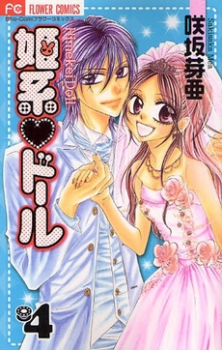

Alternative Names:Department Princess Doll; Princess Fashion Doll; The Princess Doll
Author(s):Sakisaka Mea
Genres:Romance, Shoujo, School Life, Smut
Release: 2007
Status: Current
Type: Manga
Length: 4 Volumes 20Chapters
Read Online @:


More Infor @:

Notes
Ayumu is talented in drawing desiigns but put a sewing machine in front of her and it will burst into flames! She gets into a famous design school in order to chase after Renji, a fashion designer thats already gotten his designs sold in a popular shop! She coincidently bumps into him on her first day and ends up stealing his first kiss! Wow I wonder how this manga will turn out.